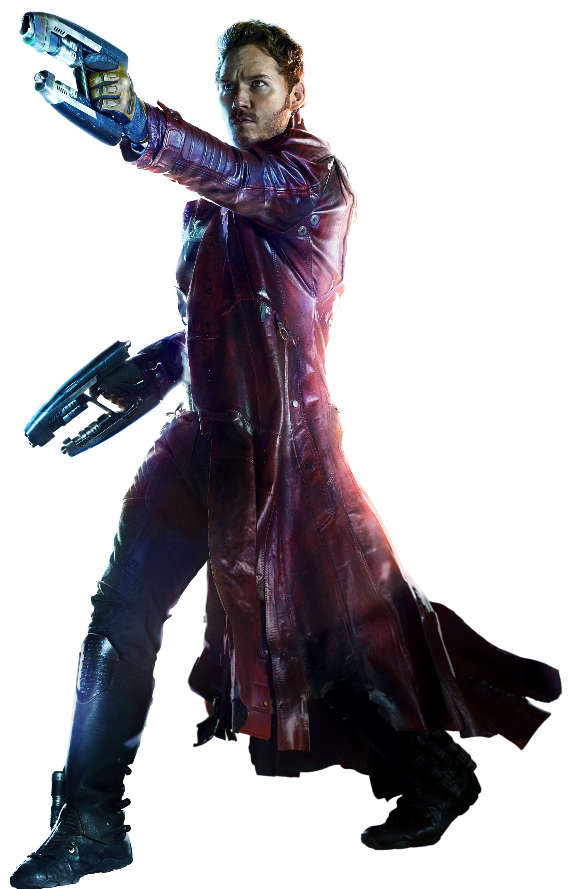
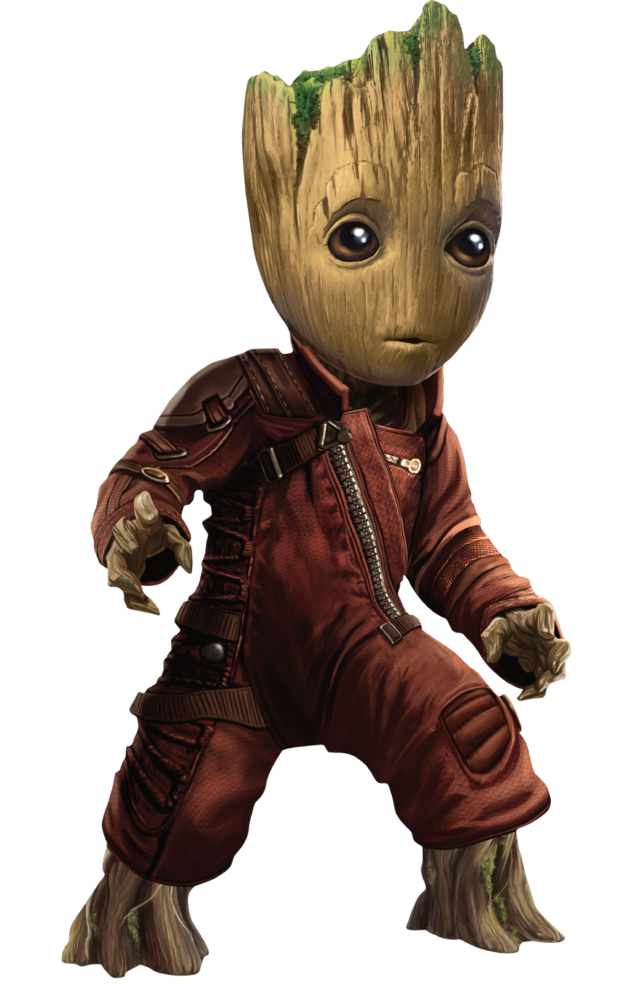
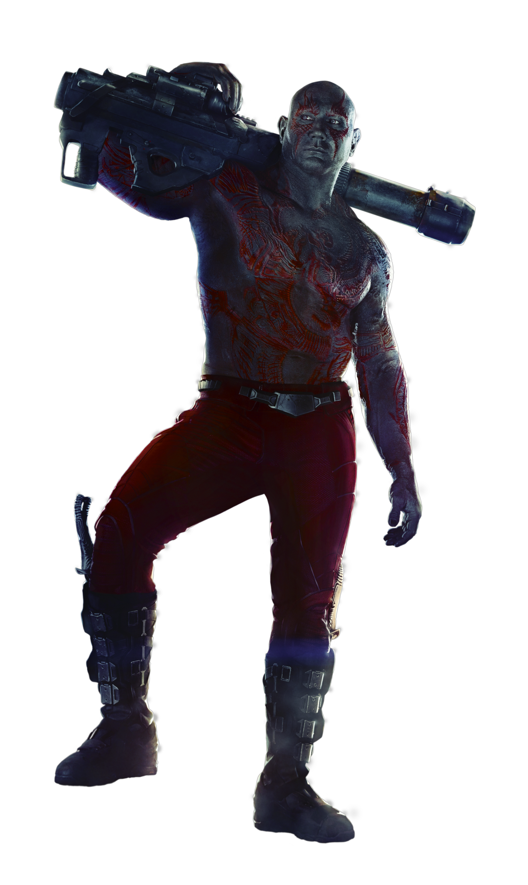
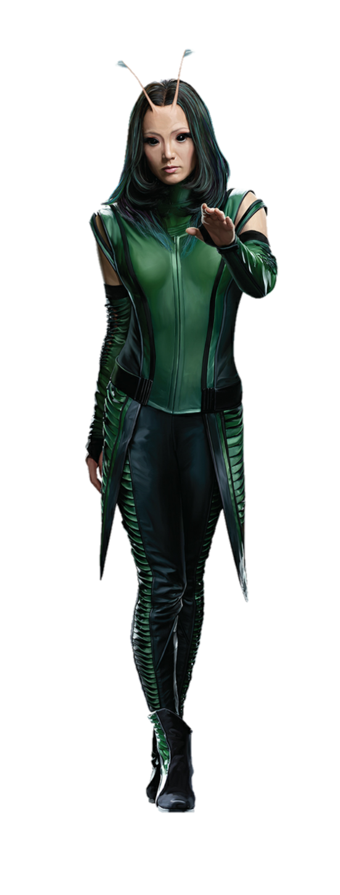

Starlord
Star-lord was born during a strange astronomical phenomenon on February the 4th when the planets were unusually aligned.
Star-Lord's ship in the Guardians of the Galaxy movie was an ordinary spacecraft known as "The Milano", actually began life as a sentient star who went by the name of Aurora.
Groot
BABY GROOT SPEAKS SIXTEEN LANGUAGES
HE HAS NO MEMORIES OF HIS OLD SELF
Rocket
Rocket Raccoon was inspired by the Beatles song "Rocky Raccoon."
Rocket's first job was in an insane asylum.

Drax
Drax the Destroyer was originally a real estate agent. Arthur Douglas
Mentor, Thanos father, with the help of Kronos, wiped poor Arthur’s memory and threw his soul into a new body of their own design. Thus, Drax the Destroyer was born. His only purpose in life: to defeat Thanos!
Yondu
Yondu is a member of the Centaurian race, and a native of the planet, Alpha Centauri IV, the first planet to be colonized by humans from Earth.
YONDU ONCE TRIED TO GIVE HIS BOW TO THOR AS AN OFFERING

Gamora
Gamora is the last of the Zen-Whoberis people
HER FULL NAME IS GAMORA ZEN WHOBERI BERI BEN TITAN

Mantis
The Kree believe she might become the Celestial Madonna and mate with the eldest Cotati on Earth to become the mother of the Celestial Messiah, "the most important being in the universe".
Mantis was trained by the Priests of Pama to become a grandmistress of the martial arts, demonstrated as capable of defeating opponents as skilled as Captain America
